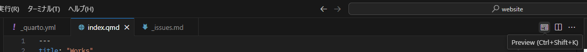
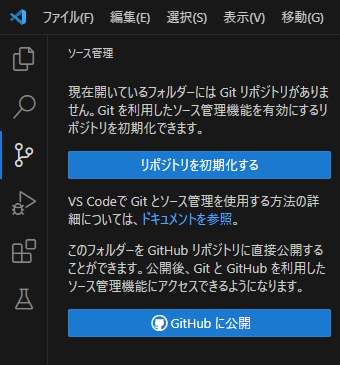
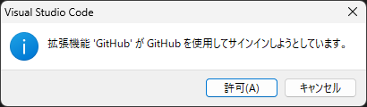

簡単にウェブサイトを作成・公開・維持する方法はないかと模索していたところ、QuartoとGitHub Pagesを使った方法にたどり着きました。これなら楽そうと思い、10年くらい手つかずだった個人ウェブサイトを刷新しました。ここでは、備忘録も兼ねて手順を簡単に解説します。
- Quarto
- Markdownベースでウェブサイトを作成します。
- GitHub Pages
- Gitでウェブサイトの更新を管理し公開します。
Quartoとは
Quartoとは、拡張Markdown形式データ（拡張子は.qmd）を作成し、それを基にpandocによってHTMLファイル、PDFファイルなど様々な形式に変換して文書を構築するアプリケーションです。Jupyter notebookのように、文書内でコードを実行しその結果を表示することもできます。
Quartoを使ったウェブサイト構築のメリットは以下の通り。
- Markdownで比較的簡単に記述できる。HTMLを編集するのに比べて、更新がだいぶ楽。
- ブログ形式のサイトも作成できる。
- テンプレートでもそれなりのデザイン。
ツールのセットアップ
Quarto
QuartoウェブサイトのトップページからGet Startedボタンをクリックしてダウンロードサイトに飛びます。OSに合わせたバージョンをインストールします。
Visual Studio Code
Markdownの編集、GitHubとの連携に使います。VS Codeウェブサイトからインストールします。
VS Codeを立ち上げ、Quartoの拡張機能 (Extentions) でQuartを検索し、インストールします。
Quartoのダウンロードサイトでも手順を解説しているので参考にしてください。
Git
更新の管理とGitHubへのアップロードに使います。VS Codeと連携して使います。まず、GitウェブサイトからOSに合わせてインストールします。
Choosing the default editor used by Gitでは、
VS Codeを選択します。Adjusting the name of the initial branch in new repositoriesでは、初期ブランチ名をどうするか選択します。GitHubは “main” を採用しているので
Override the deault branch name for new repositoriesを選択し、初期ブランチ名にmainと入力します。
あとはデフォルトの設定で良いかと思います。変更する場合は各自調べてください。
GitHub
GitHubでアカウントを作成します。
アカウントを作ったら、ウェブサイト公開用のリポジトリを作成します。このとき、リポジトリ名を<username>.github.ioとすると、ウェブサイトURLは
https://<Username>.github.io/
になります。
ウェブサイトの作成
テンプレートから作成
Quartoのウェブサイトテンプレートを使って作成を始めます。
- ウェブサイト作成用のフォルダを用意します。
- VS Codeを起動してCtrl-Shift-PCtrl-Shift-Pでコマンドパレットを開き、
Quarto: Create Projectと入力します。 Website Projectを選択し、1.で作ったフォルダを選択してChoose Project Directoryを押します。- フォルダの中に、
index.qmdや_qualt.ymlといったテンプレートファイル一式が作られます。
テンプレートの編集
テンプレートファイルを編集したり、新しいファイルを追加したりしてウェブサイトを作成していきます。ウェブサイト全体の設定は_quarto.ymlに記述します。初期状態では
project:
type: website
website:
title: "<website title>"
navbar: #ページナビの設定
left: #左詰め
- href: index.qmd #1つめのリンク先
text: Home #1つ目のリンク先のテキスト（設定しないとリンク先のタイトルが使われる）
- about.qmd #2つ目のリンク先
format:
html:
theme: cosmo #ページデザイン
css: styles.css #CSSファイル（使わないなら消してよい）
toc: true #ページ内目次のON/OFF（ページごとの設定も可）となっています。（コメントは筆者の追記）
詳しい作成方法については、Quatro > Websitesを参照してください。
プレビューとレンダリング
index.qmdなど作成・編集したファイルを開き、VS Code右上のPreviewボタンをクリックすると、ウェブサイトのプレビューを表示できます。Ctrl-Shift-KCtrl-Shift-Kでも可能です。

全ページをレンダリングする場合は、
> quarto renderを実行してください。
レンダリングで作成されたファイルは/Docs/フォルダに置かれます。ウェブサイトを公開する際は、このフォルダを指定します。
ウェブサイトの公開
Gitのリポジトリ作成とGitHubとの連携
フォルダのリポジトリ登録とGitHubへの公開を同時に行います。
VS CodeのSoruce Controlをクリックし、GitHubに公開をクリックします。

GitHubへのサインインを求められるので、許可をクリックしてブラウザからGitHubにサインインし、Authorize-Visual-Studio-Codeをクリックし、VS CodeとGitHubを連携させます。

VS Codeに戻り、Publish to GitHub public repositoryを選択し、リポジトリに含めるファイルを選択してOKをクリックします1。これで、Gitリポジトリの作成とGitHubリモートリポジトリ登録が完了しました。
GitHub Pagesの設定
GitHubのリポジトリページで、リポジトリメニューからSettingsページに飛びます。Pagesの項目で、Branchをmain、フォルダをdocsに設定し、Saveをクリックします。しばらく待ち、https://<Username>.github.io/にアクセスして公開されたウェブサイトを確認してください。

ウェブサイトの更新
ウェブサイトのソースファイル（.qmdファイルなど）をVS Codeで編集した際は、
- プレビューかレンダリング2でHTMLを更新
- VS Codeの
Soruce Controlから変更の横の+ボタンをクリックして、変更を”add” - コミットメッセージを記入して
コミットをクリックしローカルリポジトリに”commit” - “変更の同期”をクリックしてGitHubに”push”
で更新できます。